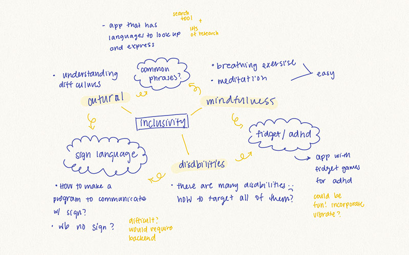

I started by choosing a broad topic that I wanted to explore. In class I researched "inclusivity" and it really made my think about topics within inclusivity. The first idea that came into my mind was cultural inclusivity since I myself am part of two cultures and has firsthand experienced language barries and discrimination across cultures. The second idea that I wanted to research was disabilites. The disabled, both physically and mentally, have expereinced being excluded and it would be really beneficial to come up with a way to include them. Lastly I wanted to explore mindfullness. If the privilidged were able to feel empathy towards the less privilidged it could help bridge the gap between the two groups.
After I defined the broad topics I wanted to look into, I starting to find ideas that would intersect between two ideas. I wanted to look into sign language to bridge cultural inclusivity and disabilities. I wanted to look into mental health and ADHD to combine disability and mindfullness. Lastly, I thought about a way to bridge mindfullness and culture by brainstorming a way to communicate easier between cultures.
Then, I listed a brief description of what each idea would look like as an app. Finally, I listed some pro's and cons of each choice. My favorite idea so far is the fidget app that would be a good way to treat ADHD.